Komponen dan kelengkapan peta
Kenali jenis petanya, pahami simbolnya, lalu periksa apakah informasinya sudah jelas.
1. Kegiatan hari ini
- Perkenalan dan absensi0–20 menit
- Kilas balik minggu 1–3 dan alur semester20–30 menit
- Mengenali seluruh komponen peta30–35 menit
- Simbol titik, garis, dan area pada peta RBI35–55 menit
- Komponen peta dan contoh penggunaannya55–70 menit
- Membandingkan peta umum dan peta tematik70–85 menit
- Latihan individu melalui Google Forms85–95 menit · 10 menit
- Ringkasan dan pengantar minggu depan95–100 menit
Perkenalan pengajar
- Nama
- Ni Putu Praja Chintya
- Panggilan
- Praja
- Kampus
- Pusan National University · S3
- Penelitian
- Data multisumber untuk pemantauan terumbu karang
Setelah pertemuan ini, mahasiswa dapat mengenali jenis peta, membaca simbol, dan menjelaskan fungsi komponen peta.
2. Kilas balik minggu 1–3
Minggu 1 · Apa itu peta?
- Peta menyajikan informasi tentang permukaan bumi dalam bentuk yang diperkecil.
- Objek dan informasi diwakili oleh simbol.
- Informasi dipilih sesuai tujuan dan skala peta.
Minggu 2 · Jenis peta berdasarkan isinya
Menampilkan berbagai unsur geografis.
Contoh: peta topografi / RBIMenonjolkan tema tertentu.
Contoh: peta kepadatan pendudukA. Peta umum: peta RBI Yogyakarta
- RBI adalah singkatan dari Rupabumi Indonesia.
- Pada satu peta, kita dapat melihat jalan, sungai, permukiman, dan lokasi fasilitas.
- Peta topografi juga menggambarkan bentuk permukaan bumi, misalnya melalui garis kontur.
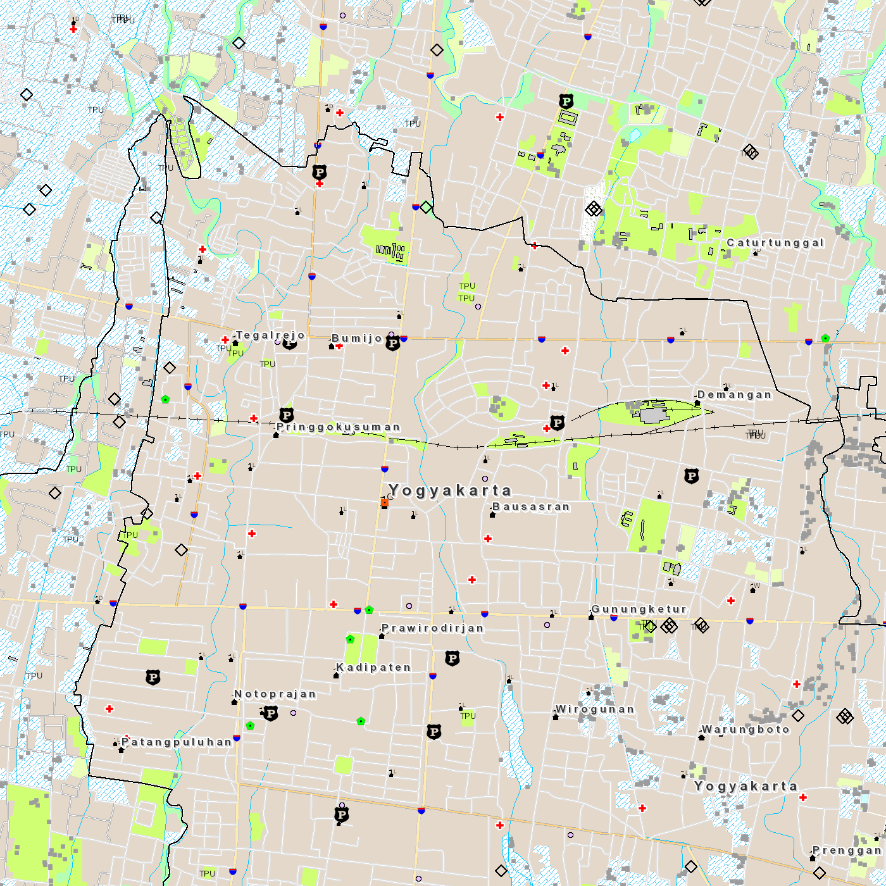
Titik · Sumber BIG
Garis · Sumber BIG
Area · Sumber BIG
Area · Sumber BIG
Peta RBI merupakan peta dasar resmi Indonesia. Informasi lokasi pada peta dasar dapat digunakan sebagai acuan untuk menambahkan tema lain. Sumber: BIG.
B. Peta tematik: kepadatan penduduk
- Tema utamanya adalah penduduk, bukan semua unsur geografis.
- Warna wilayah membantu membandingkan nilai pada legenda.
- Peta bagian atas menunjukkan jumlah penduduk; bagian bawah menunjukkan kepadatan.
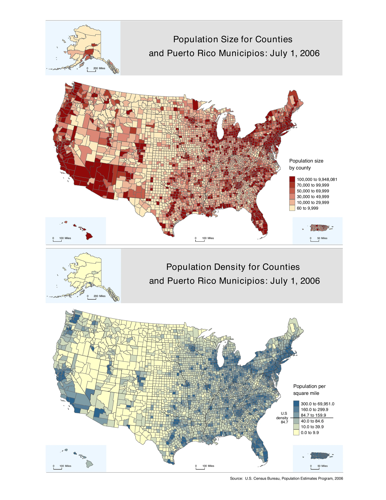
Sumber: U.S. Census Bureau, Population Size and Density, 1 Juli 2006.
Bandingkan: peta RBI membantu mengenali berbagai objek. Peta kepadatan penduduk membantu melihat wilayah yang lebih padat atau lebih jarang penduduknya.
Dasar pengelompokan lainnya
| Dasar pembagian | Yang dibandingkan | Contoh |
|---|---|---|
| Isi | Berbagai unsur atau satu tema | Peta umum dan peta tematik |
| Skala | Tingkat rincian dan cakupan wilayah | 1 : 25.000 lebih besar skalanya daripada 1 : 250.000 |
| Penyajian | Simbol atau rekaman foto/citra sebagai tampilan utama | Peta garis dan peta foto/citra |
Satu peta dapat masuk beberapa kelompok sekaligus. Misalnya, peta RBI dapat disebut peta umum berdasarkan isinya dan peta garis berdasarkan penyajiannya. Peta garis tetap dapat memuat simbol titik dan area.
Contoh lain: peta dunia dan citra cahaya malam
Peta umum dengan cakupan dunia
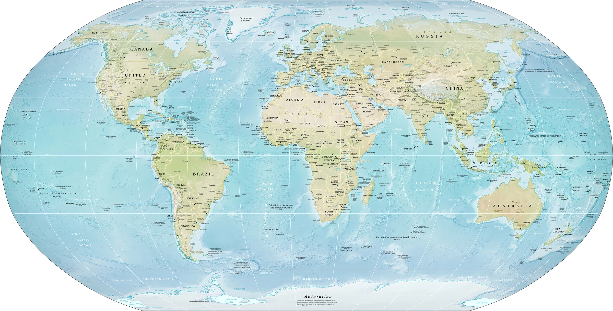
Sumber: Physical World Map, CIA World Factbook, via Wikimedia Commons.
Peta ini memperlihatkan daratan, lautan, dan nama tempat. Cakupannya luas sehingga jalan lokal dan bangunan tidak terlihat.
Penyajian dari citra satelit
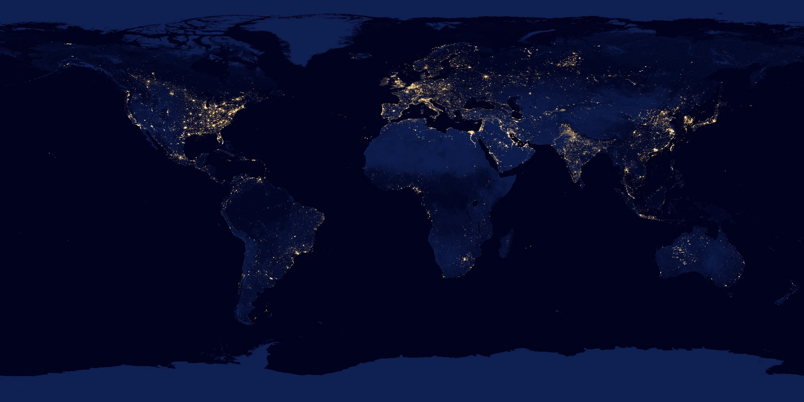
Sumber: NASA SVS, Earth at Night 2012.
Citra cahaya malam memperlihatkan cahaya yang direkam sensor. Ini contoh penyajian berbasis citra, bukan foto udara biasa dan bukan pengukuran langsung kepadatan penduduk.
Minggu 2 · Pekerjaan kartografi
- Menentukan tujuan dan pembaca peta
- Memilih dan menyiapkan data
- Menyusun simbol, tulisan, dan tata letak
- Menerbitkan peta
- Memperbarui informasi
Minggu 3 · Peta sebagai media komunikasi
- Siapa pembacanya?
- Apa informasi yang ingin disampaikan?
- Untuk apa peta digunakan?
Hari ini kita memeriksa apakah simbol dan keterangan peta membantu pembaca memahami informasi tersebut.
3. Posisi materi hari ini
- Minggu 1–3: konsep, klasifikasi, dan komunikasi peta.
- Minggu 4 · Hari ini: komponen dan kelengkapan peta.
- Minggu 5–7: proyeksi, pembacaan peta topografi, skala, dan generalisasi.
- Minggu 8: UTS.
- Minggu 9–12: relief, tampilan 3D, variabel tampak, simbol, serta pemetaan kualitatif dan kuantitatif.
- Minggu 13–15: toponimi, tata letak, dan evaluasi peta.
- Minggu 16: UAS.
Minggu 4–10 bersama Praja dilaksanakan secara daring.
3.1 Bagian-bagian sebuah peta
Perhatikan letak setiap komponen pada ilustrasi berikut, lalu cocokkan nomornya dengan daftar di bawah gambar.
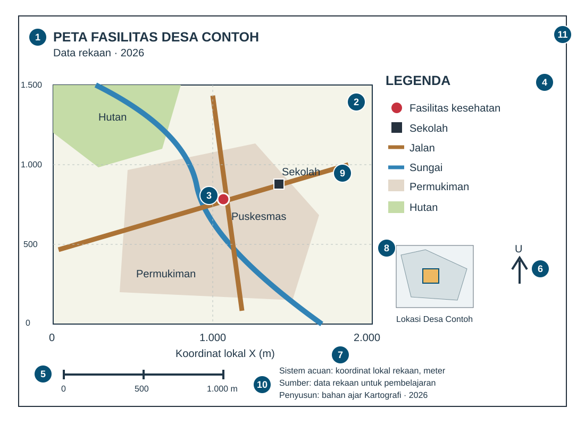
- Judul: tema dan wilayah.
- Muka peta: bagian utama yang menampilkan objek.
- Simbol: tanda yang mewakili objek atau nilai.
- Legenda: arti simbol.
- Skala: hubungan jarak pada peta dan di lapangan.
- Informasi arah: orientasi peta.
- Koordinat: posisi dalam sistem acuan.
- Inset: konteks lokasi atau perbesaran.
- Label: nama tempat dan objek.
- Sumber, tahun data, dan pembuat: asal serta waktu informasi.
- Bingkai: batas penyajian.
Daftar ini membantu memeriksa peta. Tidak semua komponen harus muncul pada setiap peta; kebutuhannya mengikuti tujuan penggunaan.
4. Mengenal simbol dari awal
Mengapa objek diubah menjadi simbol?
- Bangunan, jalan, dan danau tidak dapat ditampilkan sebesar bentuk aslinya.
- Simbol menyederhanakan objek agar tetap dapat dikenali.
- Legenda menjelaskan arti setiap simbol.
1) Simbol titik
- Menunjukkan lokasi suatu objek.
- Dapat berbentuk lingkaran, segitiga, tanda tambah, atau bentuk lain.
- Ukuran tandanya tidak otomatis menunjukkan luas objek di lapangan.
Titik · Sumber BIG
- Tanda tambah merah menunjukkan lokasi fasilitas kesehatan. Tanda ini bukan batas bangunannya.
2) Simbol garis
- Menunjukkan objek yang memanjang, seperti jalan dan sungai.
- Garis juga dapat menunjukkan batas wilayah atau ketinggian yang sama.
- Warna, ketebalan, dan pola garis membantu membedakan maknanya.
Garis · Sumber BIG
- Garis biru muda mengikuti jalur sungai. Bentuk memanjang membantu kita menelusuri alirannya.
3) Simbol area atau bidang
- Menunjukkan objek yang memiliki luas, seperti permukiman, sawah, atau danau.
- Warna atau pola isian membedakan jenis wilayah.
- Batas bidang membantu menunjukkan cakupan objek.
Area · Sumber BIG
Area · Sumber BIG
- Bidang cokelat muda menunjukkan wilayah permukiman. Simbol ini memiliki cakupan luas.
- Pola garis biru pada bidang menunjukkan sawah. Jangan menganggap semua warna biru berarti perairan.
Temukan ketiganya pada satu peta
Titik · Sumber BIG
Garis · Sumber BIG
Area · Sumber BIG
Area · Sumber BIG
- Titik: cari tanda fasilitas dan cocokkan dengan legenda.
- Garis: ikuti jalur jalan atau sungai.
- Area: perhatikan bidang permukiman dan penutup lahan lainnya.
Titik, garis, dan area adalah bentuk simbol, bukan tiga jenis peta. Ketiganya dapat digunakan bersama pada peta yang sama.
Cara membedakan simbol
Bentuk atau warna berbeda membedakan jenis objek.
Ukuran berbeda dapat menunjukkan jumlah jika dijelaskan dalam legenda.
Titik–garis–area menjelaskan bentuk penyajian. Kategori–jumlah menjelaskan jenis informasi. Jangan menyatukan keduanya sebagai satu daftar jenis simbol.
Tanda juga dapat berbentuk geometris, seperti lingkaran, atau menyerupai objek. Arti setiap tanda tetap harus diperiksa pada legenda.
Skala memengaruhi bentuk simbol
- Pada peta satu negara, kota dapat ditampilkan sebagai titik.
- Pada peta yang lebih rinci, wilayah kota dapat ditampilkan sebagai area.
- Jadi, bentuk simbol mengikuti tujuan dan skala peta, bukan hanya jenis objek.
5. Komponen yang membantu pembaca
| Pertanyaan pembaca | Komponen peta | Fungsinya |
|---|---|---|
| Apa yang dipetakan? | Judul | Menjelaskan tema dan wilayah |
| Di mana objeknya? | Muka peta, nama tempat, koordinat | Menunjukkan lokasi |
| Apa arti tanda dan warna? | Simbol dan legenda | Menjelaskan makna informasi |
| Seberapa jauh? | Skala | Menghubungkan jarak pada peta dan di lapangan |
| Ke arah mana? | Informasi arah | Membantu memahami orientasi |
| Di mana wilayah ini dalam cakupan lebih luas? | Inset | Menunjukkan konteks lokasi |
| Dari mana dan kapan datanya? | Sumber dan tahun data | Menjelaskan asal serta waktu informasi |
Judul dan muka peta
Muka peta adalah bagian utama yang memuat objek. Berikut tiga contoh susunan, bukan pembagian baku “jenis muka peta”.
Legenda: cocokkan tanda dengan maknanya
Objek apa yang ditunjukkan setiap tanda?
● Fasilitas kesehatan
▲ Sekolah
■ Kantor desa
- Legenda kategori: membedakan jenis objek, seperti pada RBI.
- Legenda angka: menjelaskan nilai, kelas, dan satuan, seperti pada peta kepadatan penduduk.
Tiga bentuk penyajian skala
1 : 25.000
1 cm pada peta mewakili 250 m di lapangan.
Contoh membaca skala
- Skala angka tidak otomatis tetap benar ketika gambar diperbesar.
- Skala grafis ikut berubah jika ukuran peta diubah secara proporsional.
Skala lebih besar atau lebih kecil?
Perbandingan ini berlaku pada ukuran lembar yang sama. “Angka–verbal–grafis” adalah bentuk penyajian skala, bukan besar-kecilnya skala.
Arah dan koordinat
- Panah utara membantu mengenali arah; garis koordinat juga dapat memberikan informasi orientasi.
- Lintang–bujur menggunakan sudut, sedangkan koordinat bidang dapat menggunakan meter.
- Koordinat harus memiliki sistem acuan yang jelas. Proyeksi peta dibahas minggu depan.
Dua fungsi inset
Contoh: letak wilayah kajian dalam satu pulau.
Contoh: pusat kota yang terlalu padat pada peta utama.
Perhatikan inset pada ilustrasi komponen: kotak kecil menunjukkan lokasi Desa Contoh. Skala inset dapat berbeda dari peta utama.
Label dan informasi sumber
- Nama tempat harus terbaca dan tidak menutupi simbol penting.
- Tahun data menunjukkan waktu kondisi yang digambarkan; tahun penerbitan menunjukkan kapan peta diterbitkan.
- Tanggal akses menunjukkan kapan sumber dibuka, bukan kapan data diukur.
Contoh RBI pada halaman ini diakses pada 6 September 2026. Nama layanan menyebut RBI 2019; ini tidak berarti seluruh data diukur pada tanggal akses.
Apakah semua komponen harus selalu ada?
- Pertimbangkan tujuan dan kebutuhan pembaca.
- Pada artikel, judul dan sumber dapat berada di keterangan gambar.
- Peta untuk pengukuran memerlukan informasi yang lebih lengkap daripada peta pengenal lokasi.
Jangan hanya mencari komponen yang hilang. Jelaskan apa akibatnya bagi pembaca.
Mengenali istilah lainnya
- Muka peta: bagian utama tempat informasi geografis ditampilkan.
- Bingkai: membatasi tampilan peta, tidak selalu merupakan batas wilayah.
- Label: tulisan yang memberi nama tempat atau objek.
- Koordinat: angka posisi dalam suatu sistem acuan.
- Kontur: garis yang menghubungkan tempat dengan ketinggian sama.
- Tahun data: waktu kondisi yang digambarkan, bukan selalu tahun penerbitan peta.
6. Membaca peta dengan urutan yang sama
- Baca judul dan kenali wilayahnya.
- Kenali jenis peta dan informasi utamanya.
- Baca legenda, lalu cari simbolnya pada peta.
- Periksa skala, arah, sumber, dan waktu data sesuai kebutuhan.
- Simpulkan informasi yang dapat dibaca dan yang belum dapat diketahui.
Dari peta RBI ke peta tematik
- Peta RBI: simbol membedakan berbagai objek, seperti fasilitas, jalan, dan permukiman.
- Peta kepadatan penduduk: warna wilayah menunjukkan kelas kepadatan, bukan jenis penutup lahan.
- Kesimpulan: warna yang sama dapat memiliki arti berbeda pada peta yang berbeda.
Mengapa simbol tersebut digunakan? Hubungkan bentuk simbol dengan informasi yang ingin disampaikan.
Contoh lanjutan: peta penduduk, lingkungan, dan penelitian
A. Peta lokasi pengamatan
- Jenis: peta tematik lokasi pengamatan pada peta dasar daratan.
- Simbol: lingkaran merah = BO; persegi biru = BX.
- Tujuan: menunjukkan lokasi dan membedakan kategori pengamatan.
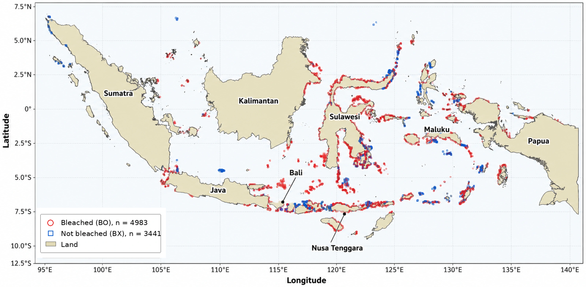
Sumber: Chintya, N. P. P., Baek, S., & Kim, W. (2026). Assessing Coral Reef Stress in Indonesia by Combining SST and Ocean Color Data. Remote Sensing, 18(12), 2019..
Diskusi: Mengapa tanda titik tidak dapat dibaca sebagai luas terumbu karang?
Arti BO dan BX
BO menandai pengamatan pemutihan; BX menandai pengamatan tanpa atau dengan pemutihan rendah menurut definisi operasional artikel. Bentuk dan warna membedakan kategori, bukan tingkat tekanan panas. Titik-titik ini bukan peta tutupan seluruh terumbu karang.
B. Jumlah penduduk dan kepadatan penduduk
- Jenis: peta tematik dengan pewarnaan wilayah.
- Simbol: warna wilayah mengikuti kelas nilai pada legenda.
- Tujuan: membandingkan jumlah penduduk (atas) dengan kepadatan (bawah).
Sumber: U.S. Census Bureau, Population Size and Density, 1 Juli 2006.
Diskusi: Apakah wilayah berpenduduk paling banyak selalu paling padat?
Perhatikan satuan dan inset
Kepadatan pada sumber menggunakan penduduk per mil persegi, bukan per km². Jumlah dipengaruhi luas wilayah, sehingga pewarnaan berdasarkan jumlah tidak sama maknanya dengan pewarnaan kepadatan. Alaska dan Hawaii ditampilkan terpisah; jangan mengukur jarak keduanya dari susunan gambar ini.
C. Anomali suhu permukaan
- Jenis: peta tematik anomali suhu.
- Simbol: gradasi warna menunjukkan selisih terhadap rata-rata 1951–1980.
- Tujuan: mengenali wilayah yang lebih hangat atau lebih dingin dari periode acuan.
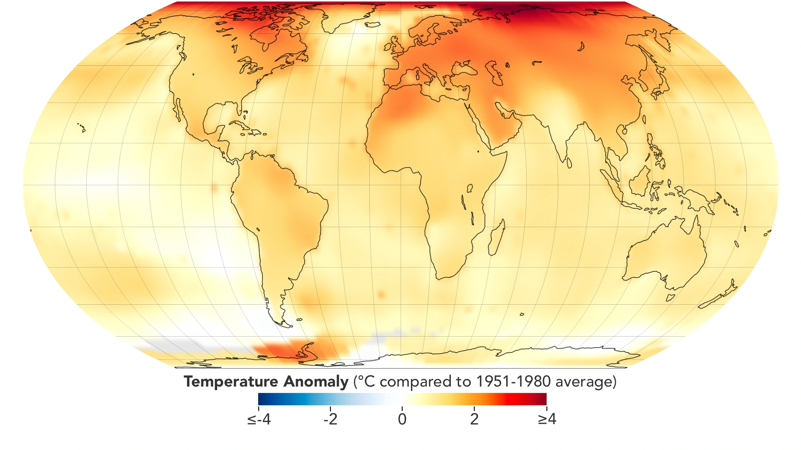
Sumber: NASA Earth Observatory — World of Change: Global Temperatures.
Diskusi: Mengapa nilai +2 °C tidak berarti suhu sebenarnya adalah 2 °C?
Contoh tambahan · tekanan panas, citra malam, dan peta historis
D. Peringatan pemutihan karang
- Jenis: peta tematik peringatan tekanan panas.
- Simbol: warna membedakan kategori peringatan pada legenda.
- Tujuan: membantu menentukan lokasi yang perlu mendapat perhatian.
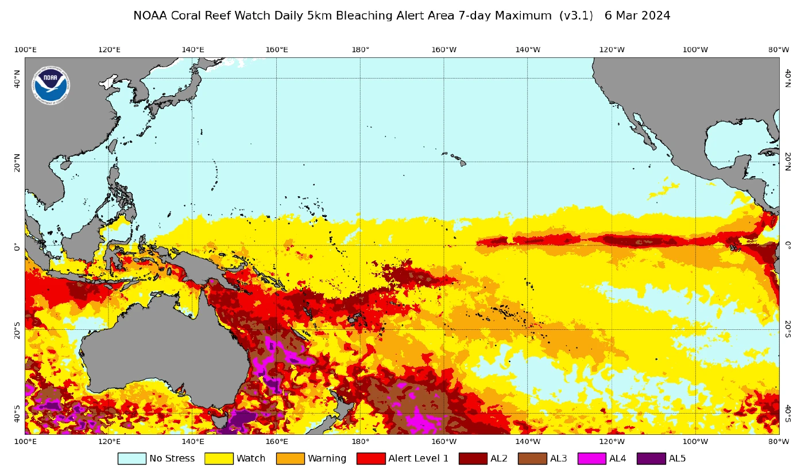
Sumber: NOAA Coral Reef Watch, Pacific Climate Update, 7 Maret 2024, Gambar 3.
Diskusi: Mengapa warna peringatan bukan bukti langsung persentase karang yang memutih?
E. Cahaya malam
- Penyajian: citra komposit cahaya malam, April dan Oktober 2012.
- Tanda visual: terang–gelap memperlihatkan cahaya yang teramati sensor.
- Tujuan: mengenali pola sebaran cahaya, bukan langsung mengukur kepadatan penduduk.
Sumber: NASA SVS, Earth at Night 2012.
Diskusi: Data tambahan apa yang diperlukan untuk menghubungkan cahaya dengan penduduk?
F. Peta kolera John Snow
- Jenis: peta tematik kejadian pada konteks jaringan jalan.
- Simbol: tanda kejadian dan lokasi pompa membantu membaca pola.
- Tujuan: menelusuri hubungan keruangan sebagai dasar penyelidikan.
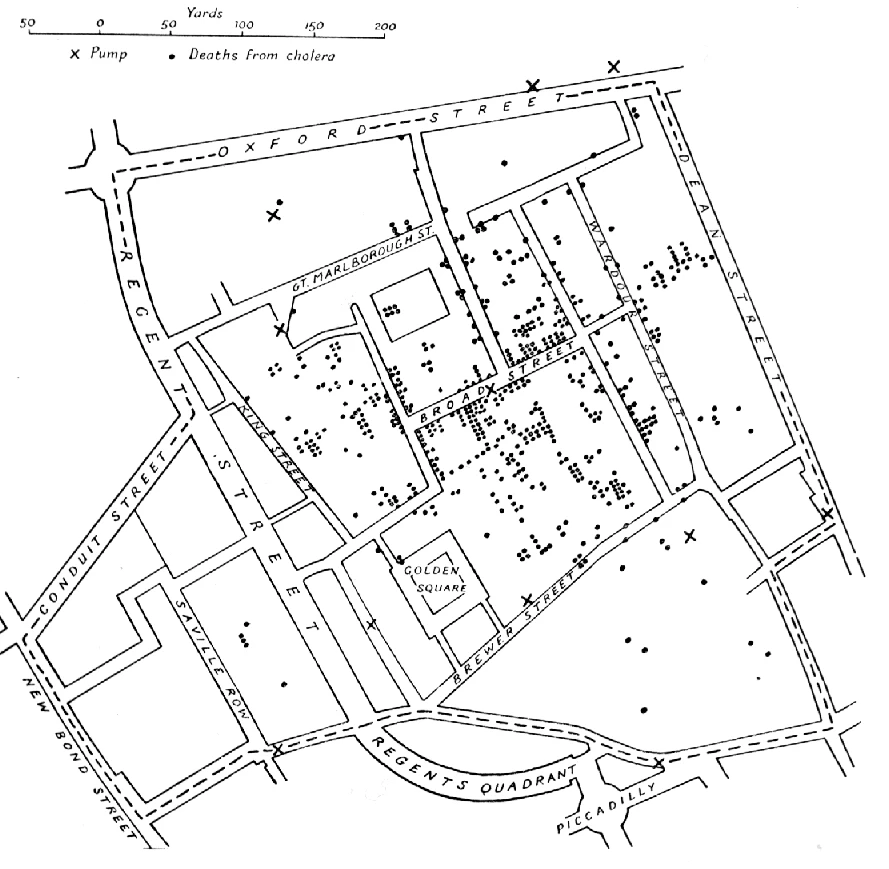
Sumber: Varian peta John Snow, wabah kolera London 1854.
Diskusi: Apakah pola yang berdekatan sudah cukup untuk membuktikan sebab-akibat?
G. Peta Minard
- Jenis: peta aliran yang dipadukan dengan grafik.
- Simbol: jalur menunjukkan perjalanan; lebar menunjukkan jumlah orang.
- Tujuan: menghubungkan lokasi, perubahan jumlah, dan informasi suhu.
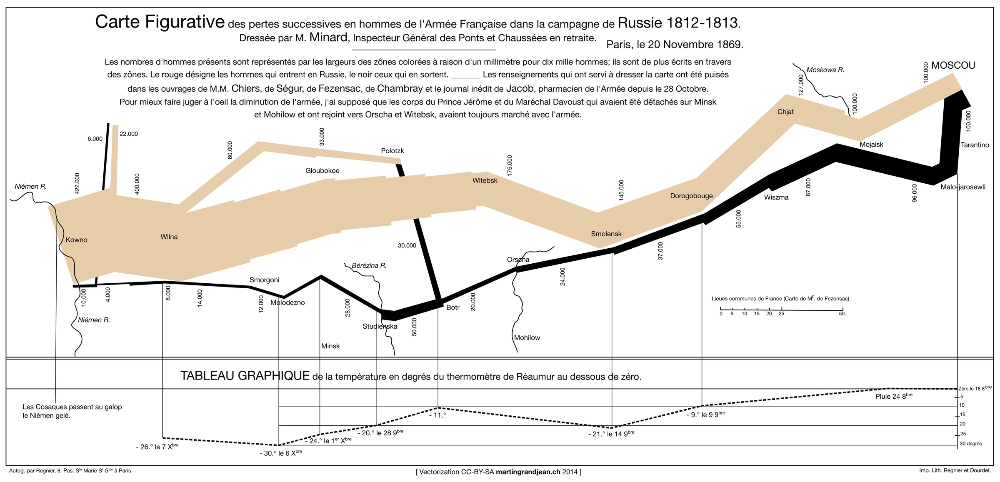
Sumber: Martin Grandjean, vektorisasi peta Charles Joseph Minard.
Diskusi: Mengapa lebar jalur tidak boleh ditafsirkan sebagai lebar jalan?
Pendalaman · peta penelitian terumbu karang
H. Bali: membaca peta beberapa panel
- Jenis: peta tematik hasil analisis beberapa indikator.
- Simbol: warna untuk nilai indikator; lingkaran merah untuk pengamatan BO.
- Tujuan: membandingkan indikator tekanan dengan lokasi pengamatan.
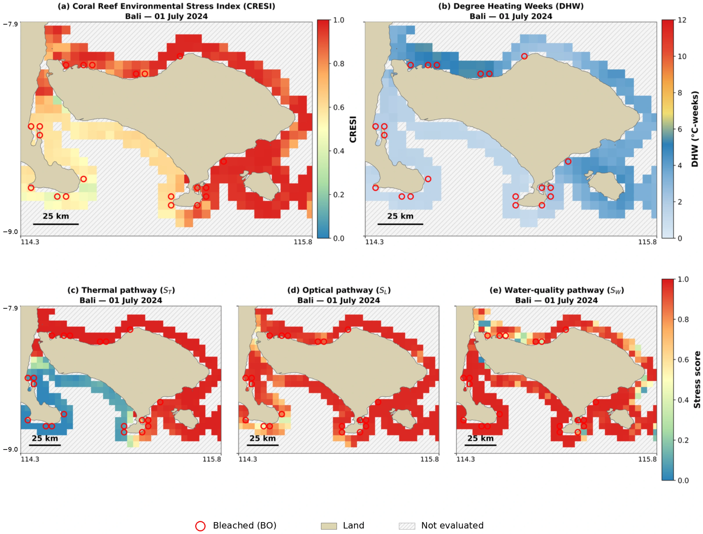
Sumber: Chintya, N. P. P., Baek, S., & Kim, W. (2026). Assessing Coral Reef Stress in Indonesia by Combining SST and Ocean Color Data. Remote Sensing, 18(12), 2019..
Diskusi: Mengapa warna yang mirip di dua panel belum tentu berarti nilai yang sama?
CRESI menggunakan indeks 0–1; DHW menggunakan °C-minggu. ST, SL, dan SW menggunakan skor 0–1. Arsiran Not evaluated berarti tidak dievaluasi, bukan nilai nol.
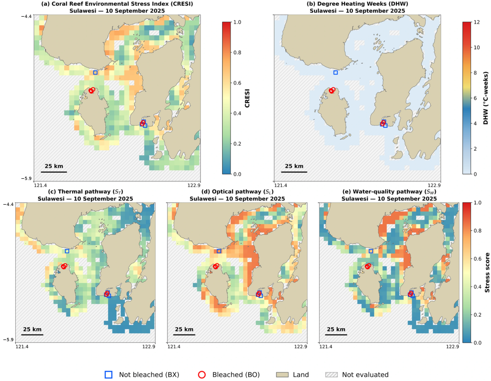
Sumber: Chintya, N. P. P., Baek, S., & Kim, W. (2026). Assessing Coral Reef Stress in Indonesia by Combining SST and Ocean Color Data. Remote Sensing, 18(12), 2019..
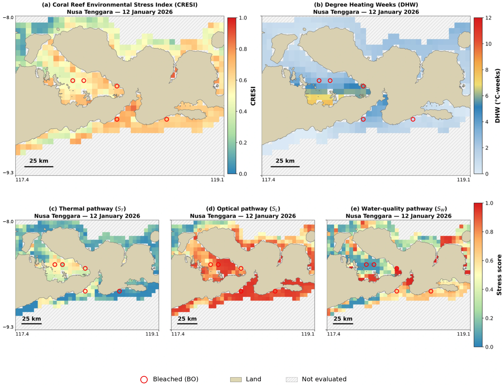
Sumber: Chintya, N. P. P., Baek, S., & Kim, W. (2026). Assessing Coral Reef Stress in Indonesia by Combining SST and Ocean Color Data. Remote Sensing, 18(12), 2019..
- Bali: 1 Juli 2024; Sulawesi: 10 September 2025; Nusa Tenggara: 12 Januari 2026.
- Tanggal berbeda: jangan menganggap ketiganya merekam kondisi pada waktu yang sama.
- Periksa legenda, satuan, dan skala setiap panel sebelum membandingkan.
7. Latihan individu melalui Google Forms · 10 menit
Gunakan satu peta RBI Yogyakarta yang sama untuk seluruh mahasiswa. Posisikan diri sebagai pembaca yang baru pertama kali melihat peta tersebut.
Buka peta latihan ukuran penuh →
- Gunakan peta dan legenda yang disediakan dalam soal.
- Jawab lima pertanyaan singkat secara individu.
- Untuk setiap jawaban, sebutkan bukti yang terlihat pada peta.
- Periksa jawaban, lalu kirim melalui Google Forms sebelum waktu habis. Tautan dibagikan saat latihan dimulai.
Pertanyaan
- Apakah peta RBI yang disediakan termasuk peta umum atau peta tematik? Sebutkan dua jenis objek yang terlihat sebagai alasan.
- Apa arti tanda tambah merah pada peta? Mengapa simbol itu termasuk simbol titik, bukan area?
- Sebutkan satu contoh simbol garis dan satu contoh simbol area pada peta. Jelaskan objek yang diwakili masing-masing.
- Dapatkah jarak pasti antara dua fasilitas ditentukan hanya dari gambar dan legenda yang disediakan? Jelaskan informasi apa yang diperlukan.
- Jika peta ini digunakan oleh orang yang baru pertama kali datang ke Yogyakarta untuk menemukan fasilitas kesehatan, apa satu perbaikan paling penting? Jelaskan manfaatnya.
Jawaban cukup 1–2 kalimat per pertanyaan. Tidak perlu membuat slide atau mencari peta lain.
8. Ringkasan dan pertemuan berikutnya
- Jenis peta ditentukan oleh dasar pengelompokannya, misalnya isi, skala, atau penyajian.
- Simbol titik menunjukkan lokasi; garis menunjukkan jalur atau batas; area menunjukkan wilayah.
- Legenda dan komponen lain membantu pembaca memahami peta dengan benar.
Minggu 5 · Proyeksi peta
Bagaimana permukaan bumi yang melengkung digambarkan pada bidang datar? Kita akan membahas perubahan bentuk, luas, jarak, dan arah pada peta.
9. Referensi dan sumber gambar
Daftar bacaan dan sumber
- Badan Informasi Geospasial — Basemap Rupabumi Indonesia. Cuplikan wilayah Yogyakarta; diakses 6 September 2026. Nama layanan menyebut RBI 2019; tanggal akses bukan tahun pengamatan data.
- Chintya, N. P. P., Baek, S., & Kim, W. (2026). Assessing Coral Reef Stress in Indonesia by Combining SST and Ocean Color Data. Remote Sensing, 18(12), 2019.
- NASA Earth Observatory — World of Change: Global Temperatures
- USGS — Seismicity of the Earth 1900–2018
- Uli Ingram, OpenALG, Bab 2: Map Elements and Design Principles
- Kamyar Hasanzadeh, Lesson 1: Introduction to Cartography
- Eric Deluca dan Dudley Bonsal, Design and Symbolization
- U.S. Census Bureau, Population Size and Density, 1 Juli 2006
- USGS, Topographic Map Symbols
- Physical World Map, CIA World Factbook, via Wikimedia Commons
- Varian peta John Snow, wabah kolera London 1854
- Martin Grandjean, vektorisasi peta Charles Joseph Minard
- NASA SVS, Earth at Night 2012
- NOAA Coral Reef Watch, Pacific Climate Update, 7 Maret 2024, Gambar 3
- Manuel Gimond — Good Map Making Tips